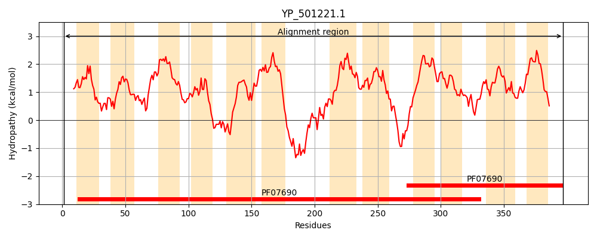
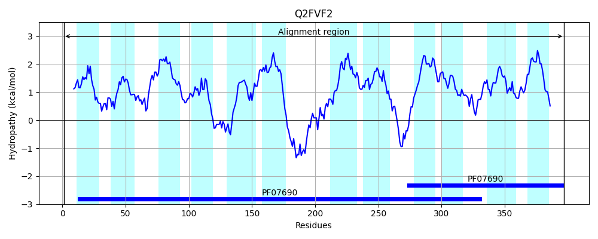
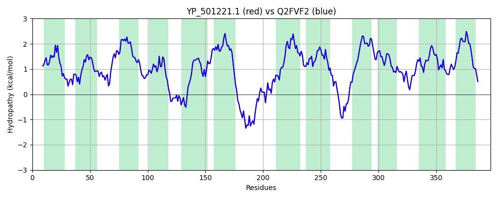

Hit Accession: Q2FVF2
Hit TCID: 2.A.1.46.10
Hit Description: gnl|BL_ORD_ID|13232 gnl|TC-DB|Q2FVF2|2.A.1.46.10 Uncharacterized protein OS=Staphylococcus aureus (strain NCTC 8325) GN=SAOUHSC_02762 PE=4 SV=1
Mach Len: 397
e:0.000000
Query TMS Count : 12
Hit TMS Count: 12
TMS-Overlap Score: 12.050000
Predicted Substrates:None
BLAST Alignment:
Score: 1997 , Bit scores: 773 bits, E-value: 0.0e+00, Alignment length: 397, Percentage identity: 100
Query: 1 MKGAMAWPFLRLYILTLMFFSANAILNVFIPLRGHDLGATNTVIGIVMGAYMLTAMVFRPWAGQIIARVGPIKVLRIILIINAIALIIYGFTGLEGYFVARVMQGVCTAFFSMSLQLGIIDALPEEHRSEGVSLYSLFSTIPNLIGPLVAVGIWNANNISLFAIVIIFIALTTTFFGYRVTFAEQEPDTSDKIEKMPFNAVTVFAQFFKNKELLNSGIIMIVASIVFGAVSTFVPLYTVSLGFANAGIFLTIQAIAVVAARFYLRKYIPSDGMWHPKYMVSVLSLLVIASFVVAFGPQVGAIIFYGSAILIGMTQAMVYPTLTSYLSFVLPKVGRNMLLGLFIACADLGISLGGALMGPISDLVGFKWMYLICGMLVIVIMIMSFLKKPTPRPASSL 397
MKGAMAWPFLRLYILTLMFFSANAILNVFIPLRGHDLGATNTVIGIVMGAYMLTAMVFRPWAGQIIARVGPIKVLRIILIINAIALIIYGFTGLEGYFVARVMQGVCTAFFSMSLQLGIIDALPEEHRSEGVSLYSLFSTIPNLIGPLVAVGIWNANNISLFAIVIIFIALTTTFFGYRVTFAEQEPDTSDKIEKMPFNAVTVFAQFFKNKELLNSGIIMIVASIVFGAVSTFVPLYTVSLGFANAGIFLTIQAIAVVAARFYLRKYIPSDGMWHPKYMVSVLSLLVIASFVVAFGPQVGAIIFYGSAILIGMTQAMVYPTLTSYLSFVLPKVGRNMLLGLFIACADLGISLGGALMGPISDLVGFKWMYLICGMLVIVIMIMSFLKKPTPRPASSL
Sbjct: 1 MKGAMAWPFLRLYILTLMFFSANAILNVFIPLRGHDLGATNTVIGIVMGAYMLTAMVFRPWAGQIIARVGPIKVLRIILIINAIALIIYGFTGLEGYFVARVMQGVCTAFFSMSLQLGIIDALPEEHRSEGVSLYSLFSTIPNLIGPLVAVGIWNANNISLFAIVIIFIALTTTFFGYRVTFAEQEPDTSDKIEKMPFNAVTVFAQFFKNKELLNSGIIMIVASIVFGAVSTFVPLYTVSLGFANAGIFLTIQAIAVVAARFYLRKYIPSDGMWHPKYMVSVLSLLVIASFVVAFGPQVGAIIFYGSAILIGMTQAMVYPTLTSYLSFVLPKVGRNMLLGLFIACADLGISLGGALMGPISDLVGFKWMYLICGMLVIVIMIMSFLKKPTPRPASSL 397 | Protein Hydropathy Plots: |
|---|
|  |  |
Pairwise Alignment-Hydropathy Plot:
|
|---|
|  |